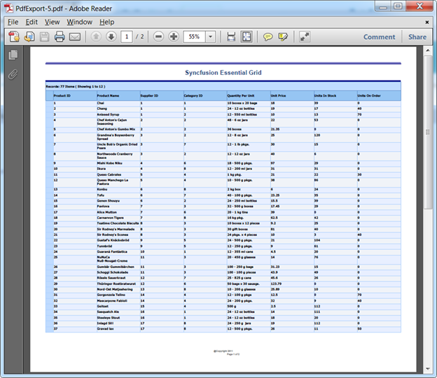
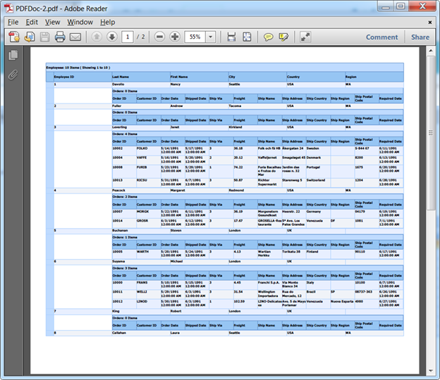
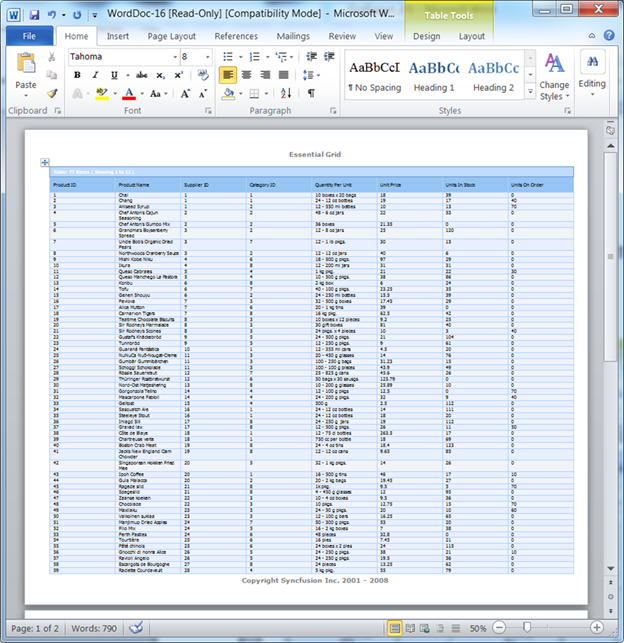
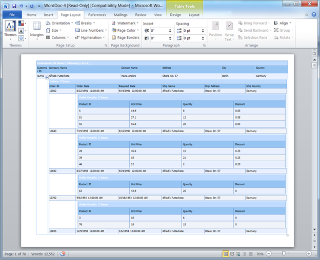
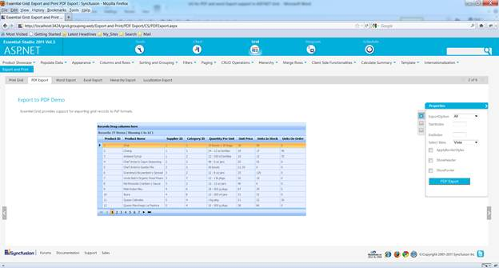

You can export Grid data to a PDF or Word format using this feature, and can customize the exported Grid in any way that you might require-- formatting the cells of the exported Grid, adding a header and footer to the exported Grid, changing its styles, etc.
This feature supports the export of both normal and nested (Hierarchical) grids as well.
Exporting is done through server-side Export method.
Use Case Scenarios
This feature allows you to perform the following actions in Grid:
· Export Grouped tables
· Export Nested tables
· Export a grid with a MultiRow record
· Export Summary rows
· Add Header and Footer to the Exported word file
· The styles applied for the grid can also be exported to the Word/PDF file
· Export choice of Grid contents- i.e. Visible, All or Custom
The following figures give you a basic idea of the appearance of the output of the feature.
This feature allows you to export Normal and Nested Grids to Word and PDF formats, as you can see in the below screenshots:

Figure 110: Normal Grid in PDF

Figure 111: Hierarchical (Nested) Grid in PDF

Figure 112: Normal Grid in Word

Figure 113: Hierarchical Grid in Word
The output will be similar when you export a grid with MultiRow records, summary rows or
Grouped tables.
You can also apply styles to the exported Grid, and choose which content you want to export- all content, just the visible content, or custom content(which could include portion of content that wasn’t visible).
Where do I find Installed samples?
To view the samples:
1. Click Dashboard.
The Essential Studio Enterprise Edition window is displayed, and the User Interface Edition panel is displayed by default.
2. Click the Run Locally Installed Samples link.
The Essential Studio ASP.NET Edition sample browser is displayed.
3. Select Grid from the drop-down.
4. Select any sample from the Export and Print tab provided and browse through the features.

Figure 114: ASP.NET Grid browser with the Export and Print tab selected
 Constructors, Properties, Methods and Events
tables
Constructors, Properties, Methods and Events
tables
Adding PDF or Word Export Support to
GridGroupingControl
How to add the header and footer to an exported
Grid in PDF or Word format?
How to format cells and rows in a Grid that was
exported to Word or PDF?